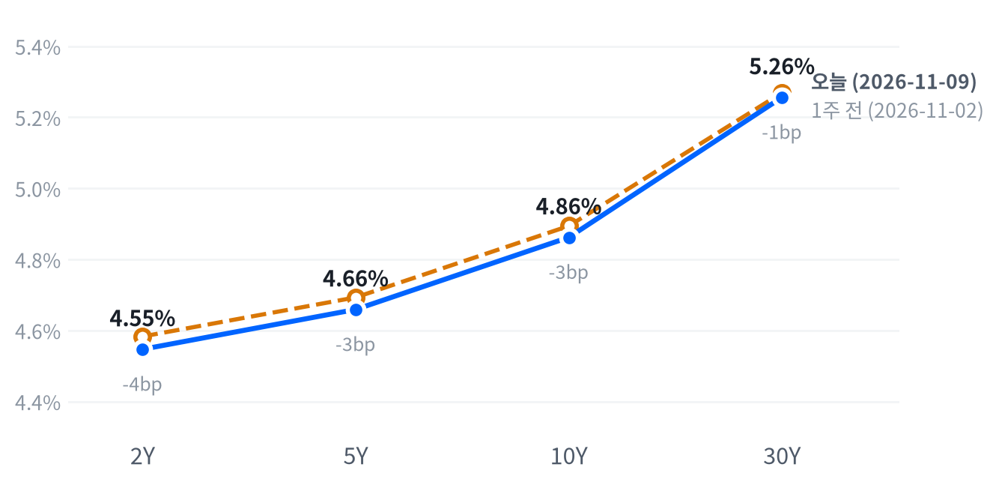

트럼프 대통령이 이란 추가 공습 가능성을 낮게 본 뒤 브렌트유가 5% 넘게 내렸고, S&P는 2.35% 올라 11개 업종이 모두 상승했다. 반도체가 반등을 이끌었지만 엔비디아는 이사회가 젠슨 황 CEO 관련 조사에 나서며 4.27% 내렸다.
이 반등은 선거 뒤 반도체 급락이 포지션 축소가 키운 과잉 하락이었다는 판단을 뒷받침하고, 엔비디아의 할인은 회사 고유의 위험으로 본다. 유가 급락에도 2년물 금리가 오른 만큼 11월 10일 나오는 10월 소비자물가가 다음 확인 지점이다.
주말 사이 트럼프 대통령이 협상이 이어지는 한 이란 추가 공습 가능성은 매우 낮다고 말한 뒤 유가가 급락했고, 지난주 선거 뒤 급락했던 반도체가 주식 반등을 이끌었다. S&P는 2.35% 올라 4월 이후 가장 크게 오른 하루라는 보도가 나왔고, 11개 업종이 모두 올랐다. 반도체 가운데 엔비디아만 거꾸로 갔다. 이사회가 젠슨 황 CEO와 중국 정보기관 연루 의혹을 받는 인물의 관계를 외부 법률 자문과 함께 조사한다고 밝힌 뒤 주가가 4.27% 내렸다.
이 반등은 지난주 반도체 급락을 포지션 축소가 키운 과잉 하락으로 본 판단(11월 5일)을 뒷받침한다. 새 규제 일정이나 하이퍼스케일러의 설비투자 축소 발언이 없었는데도 AMD·브로드컴·메모리주가 함께 올랐기 때문이다. 시장의 기대를 잴 옵션·포지셔닝 자료는 없고, 과매도, 유가 하락, 반도체로 옮겨 간 매수를 원인으로 든 보도만 있다. 가장 강한 반론은 숏커버와 유가에 기댄 하루짜리 위험선호라는 설명이고, 내일 소비자물가가 예상보다 높으면 이 반등은 다시 꺾일 수 있다. 엔비디아는 다른 문제다. 키움증권 한지영 연구원은 미국 증시가 급등한 가운데 시장이 젠슨 황 스캔들을 AI 투자 사이클과 구분해 받아들이는 분위기이고, 중동 지정학 완화와 함께 악재에 대한 시장 민감도가 낮아질 수 있다고 봤다. 우리도 이 하락을 AI 수요의 신호가 아니라 결론 시점이 정해지지 않은 조사와 핵심 인물 위험의 가격으로 본다. 같은 날 투자자는 AMD·브로드컴으로 AI 반도체 노출을 유지하면서 엔비디아 한 종목의 위험만 덜어 낼 수 있었다. 금리시장은 주식과 달랐다. 유가가 5% 넘게 내렸는데도 2년물 금리가 올라, 유가 완화보다 12월 인상 경로를 먼저 봤다.
반도체·AI 하드웨어 테마는 하루 회복으로 흐름이 나아졌지만, 한 주 전과 견주면 3개월 상대수익률이 아직 나빠진 채라 추세가 돌아섰다고 보기는 이르다. 그 테마 안에서는 엔비디아의 지배구조 위험을 나머지 종목과 따로 봐야 한다. 조사와 새 의회의 브리핑 요구, 대중국 칩 수출 통제 논의가 이어지는 동안 엔비디아는 업종 반등에서 소외되고, 이 할인은 11월 17일 장 마감 뒤 실적 발표 전까지 이어질 것으로 본다. 엔비디아 비중이 큰 반도체 바스켓은 업종 반등을 덜 누릴 수 있다. 이 판단은 반도체 ETF 대비 엔비디아의 상대 성과로 표현할 수 있지만, 옵션·차입 비용과 유동성 자료가 없어 실행 비용은 따질 수 없고 독자의 보유와 한도도 모르므로 새 매매 아이디어는 내지 않는다.
엔비디아 판단은 11월 9일 종가 대비 11월 16일 종가의 엔비디아 누적 등락률에서 S&P 500 누적 등락률을 뺀 값으로 잰다. 그 값이 -3.89%p 이하이면 지배구조 할인이 이어진다는 판단을 뒷받침하고, +3.89%p 이상이면 판단은 약해지며 하루 회전 매도였다는 설명을 우선 설명으로 본다. 그 사이면 결론을 내지 않는다. 엔비디아가 그 사이 실적 사전 발표·가이던스 변경·인수합병을 내놓거나 실적 발표일을 앞당겨도 결론을 내지 않고, 조사 결과 발표나 CEO 교체는 이 판단이 다루는 재료라 그대로 기록한다. 그 앞에 11월 10일 08:30(ET) 10월 소비자물가가 있고, 근원 전월비가 예상(0.2%)을 넘으면 앞단 주도 평탄화 판단을 뒷받침하지만 반도체 반등에는 부담이 된다.
| 지수 | 종가 | 등락 | 기준일 |
|---|---|---|---|
| 닛케이225 | 57,434.77 | -5.96% | 11월 6일 |
| 항셍 | 24,481.86 | -1.27% | 11월 6일 |
| 상해종합 | 3,649.18 | -1.10% | 11월 6일 |
| DAX | 25,820.36 | -1.92% | 11월 6일 |
| FTSE100 | 10,782.87 | +1.02% | 11월 9일 |
| 유로스톡스50 | 6,170.49 | -0.98% | 11월 6일 |
| VIX | 19.92 | -5.72p | 11월 9일 |
닛케이225·항셍·상해종합·DAX·유로스톡스50은 들어온 마지막 종가인 11월 6일 값이고, FTSE100과 VIX는 11월 9일 값이다. VIX 등락은 포인트다.
주말 트럼프 대통령의 이란 발언 뒤 장을 마친 해외 지수는 FTSE100 하나뿐이고, 1.02% 올라 미국과 같은 방향이었다. 닛케이225·항셍·상해종합과 DAX·유로스톡스50은 11월 6일 종가라 이 발언 전에 끝난 장이고, 다섯 지수 모두 내렸으며 닛케이225가 5.96% 내려 낙폭이 가장 컸다. 표에서 아시아·유럽이 미국과 엇갈려 보이고 유럽 안에서도 갈린 것은 같은 날의 반응 차이가 아니라 주말을 사이에 둔 종가 시점의 차이다.
밤사이 선물은 오르는 쪽으로 기울었다. S&P 선물(ES)은 11월 8일 18:30(ET) 저점에서 9일 07:30(ET) 고점까지 올라 범위가 1.23%였고, 나스닥 선물(NQ)은 02:30(ET) 저점에서 같은 07:30(ET) 고점까지 2.34% 범위를 움직였다. 주말 이란 발언 뒤 처음 열린 거래였다. 현물은 S&P +0.62%, 나스닥 +0.83%, 러셀2000 +1.23%의 갭으로 상승 출발했다.
S&P는 장 초반 한 차례 밀린 뒤 오후 내내 올라 하루 범위의 고점권에서 끝났고, 나스닥과 러셀2000은 범위의 중간에서 마감했다.
저점권·고점권 경계는 최근 2,253거래일의 일간 종가 위치 이력으로 다시 잰 기준이다.
유가가 주식을, 12월 인상 기대가 앞단 금리를 움직인 날이다. 유가 급락이 인플레 우려를 덜어 주식이 올랐다는 보도가 나왔고, 업종 가운데서는 에너지가 가장 약했다. 주식과 2년물 금리가 함께 오른 것은 유가 완화가 주식에는 호재였지만 금리시장의 인상 경로 판단은 바꾸지 못했다는 뜻이다.
출처: AP, Reuters
| 지수 | 종가 | 등락률 |
|---|---|---|
| 러셀2000 | 2,840.81 | +3.15% |
| 나스닥 | 25,253.14 | +2.74% |
| S&P500 성장주 | 133.07 | +2.65% |
| S&P500 | 7,549.94 | +2.35% |
| 다우존스 | 52,389.75 | +2.15% |
| S&P500 가치주 | 240.32 | +2.03% |
| 섹터 | 등락률 |
|---|---|
| 산업재 | +3.82% |
| 기술 | +3.73% |
| 경기소비재 | +2.92% |
| 커뮤니케이션서비스 | +2.45% |
| 헬스케어 | +1.91% |
| 소재 | +1.91% |
| 유틸리티 | +1.53% |
| 부동산 | +1.45% |
| 금융 | +1.45% |
| 필수소비재 | +0.90% |
| 에너지 | +0.52% |
유가 급락과 반도체 반등에 주식이 크게 올랐다. S&P는 2.35% 오른 7,550, 나스닥은 2.74% 오른 25,253, 러셀2000은 3.15% 오른 2,841로 끝났다. S&P와 러셀2000의 상승폭은 평소 하루 움직임과 견주면 매우 컸고, 나스닥도 여느 날보다 두 배 넘게 움직였다.
상승은 오전에 한 번 흔들린 뒤 오후에 쌓였다. S&P는 11:00(ET) 무렵 전 거래일 종가인 7,377까지 밀려 갭 상승분을 모두 내줬다가, 15:00(ET) 무렵 7,577까지 올라 고점 부근에서 마감했다. 오전 저점을 만든 재료는 확인되지 않았다. 나스닥과 러셀2000은 개장 직후가 저점이었고, 오후 내내 올라 시가보다 2% 가까이 높은 곳에서 끝났다.
상승을 이끈 것은 유가 급락과 반도체 반등 두 갈래다. 유가가 내려 인플레 우려가 줄었다는 해석이 나왔고, 반도체는 지난주 급락 뒤의 과매도와 엔비디아에서 다른 AI 반도체로 옮겨 간 매수가 겹쳤다는 분석이 나왔다. WTI가 14:30(ET) 무렵 장중 저점까지 밀리는 동안 S&P가 오후 내내 오른 점은 유가 쪽 설명과 같은 방향이지만, 시각이 겹친 것 이상의 근거는 없다. 성장주는 2.65%, 가치주는 2.03% 올라 성장주가 앞섰고, 소형주인 러셀2000이 대형주보다 더 올랐다.
지수 상승의 절반 넘게를 기술 업종이 만들었다. 추정 기여도로 기술이 +1.25%p를 보탰고 경기소비재(+0.40%p), 커뮤니케이션서비스(+0.32%p), 산업재(+0.24%p)가 뒤를 이었다. 헬스케어(+0.18%p)와 금융(+0.15%p), 유틸리티(+0.06%p), 필수소비재(+0.03%p), 에너지(+0.01%p)도 모두 보탰고, 업종 합으로 설명되지 않는 부분은 -0.29%p다.
추정 기여도는 업종 비중을 직접 받지 않아, 최근 252거래일 지수·업종 수익률로 추정한 비중을 곱한 값이다. 소재와 부동산은 비중을 추정할 수 없어 빠졌다. 등락폭은 최근 60거래일 평균 하루 변동 대비 S&P 2.7배, 나스닥 2.19배, 러셀2000 3.06배다.
마감이 고점권이고 11개 업종이 모두 올랐지만, 이 상승을 추세 회복으로 보기는 이르다. 기술 업종은 한 주 전보다 1.92%, 한 달 전보다 14.04% 낮다. 대형주 엔비디아가 내린 날에도 기술 업종이 3.73% 올라, 매수는 업종 전체가 아니라 엔비디아 밖의 AI 반도체로 향했다.
| 만기 | 종가(11월 9일) | 전일比(bp) | 1주 전(11월 2일) | 주간 변화(bp) |
|---|---|---|---|---|
| 2Y | 4.547% | +2.5 | 4.583% | -3.6 |
| 5Y | 4.659% | +1.1 | 4.693% | -3.4 |
| 10Y | 4.862% | +0.3 | 4.894% | -3.2 |
| 30Y | 5.256% | -0.4 | 5.269% | -1.3 |
유가가 5% 넘게 내린 날에도 앞쪽 만기 금리는 올랐다. 2년물은 2.5bp 오른 4.547%, 5년물은 1.1bp 오른 4.659%이고, 10년물은 0.3bp 오른 4.862%, 30년물은 0.4bp 내린 5.256%로 장기물은 거의 움직이지 않았다. 레벨은 여전히 높다. 10년물은 최근 2년(504거래일) 가운데 이보다 높았던 날이 40일뿐이고, 30년물은 50일뿐이다.

네이버 국채 종가, 전 만기 11월 9일 기준. 1주 전(11월 2일)보다 2년물은 3.6bp, 5년물은 3.4bp, 10년물은 3.2bp, 30년물은 1.3bp 낮다.
하루로는 앞쪽 만기만 오른 베어 플래트닝이다. 2s10s는 31.5bp로 전 거래일(33.7bp)보다 2.2bp 좁아졌고, 5s30s는 59.7bp로 1.5bp 좁아졌다. 한 주로 보면 전 만기가 내린 가운데 장기물이 덜 내려 소폭의 불 스티프닝이다. 2s10s는 1주 전 31.1bp보다 0.4bp, 5s30s는 57.6bp보다 2.1bp 가팔라졌다.
앞단 상승은 인플레 보상이 아니라 실질금리 쪽에서 나온 것으로 본다. 11월 9일 5년 기대인플레는 4bp 내린 2.25%, 10년 기대인플레는 1bp 내린 2.22%로 유가 급락을 따라 내렸는데, 같은 날 5년물 명목금리는 올랐다. 12월 인상 기대가 유가 완화보다 앞단을 강하게 붙잡았다는 뜻이다. 기대인플레는 위험·유동성 프리미엄이 섞인 인플레 보상이라 정확한 분해는 아니고, 11월 9일 실질금리가 나오면 앞단 상승의 내역이 확인된다. 대안은 주식이 급반등한 날 안전자산 수요가 빠졌다는 설명이다. 2년물은 11월 5일 급락장에서 10.4bp 내렸다가 그 뒤 두 거래일 동안 7.0bp를 되찾았다. 13:00(ET) 3년물 입찰도 수급 쪽 재료였지만, 시각별 금리가 없어 입찰이 앞단 상승에 영향을 줬는지는 확인되지 않았다.
명목금리를 실질금리와 기대인플레로 나눈 같은 날짜 자료는 11월 6일 것이 마지막이고, 고용보고서가 나온 그날 10년물 2bp 상승은 실질금리 3bp 상승과 기대인플레 1bp 하락으로 이뤄졌다. 신용시장은 11월 6일 기준 하이일드 스프레드가 3.42%로 하루 6bp 좁혀졌고, 투자등급 스프레드는 0.93%다.
5년 뒤 5년 명목금리 5.08%, 실질 2.91%(11월 6일 기준). 기대인플레 쪽 수치와의 교차검증은 할 수 없었고, 위험 프리미엄이 섞인 값이다.
| 입찰 | 규모 | 낙찰 | 응찰배율 | 간접 | 직접 | 딜러 | 판정 |
|---|---|---|---|---|---|---|---|
| 3년물 | 580억 달러 | 4.627% | 2.53배 (2.64배) | 55.5% (63.0%) | 35.0% (24.8%) | 9.5% (12.2%) | 엇갈림 |
재무부는 13:00(ET) 3년물 580억 달러를 4.627%에 팔았다. 규모는 직전 같은 만기 입찰(10월 6일)과 같다. 응찰배율은 2.53배로 직전 6회 평균(2.64배)보다 0.11배 낮았다. 딜러 비중은 9.5%로 평균(12.2%)보다 2.7%p 낮았고, 해외 중앙은행·기관 수요의 대용인 간접 비중은 55.5%로 평균(63.0%)보다 7.5%p 낮았다. 직접 비중은 35.0%로 평균(24.8%)보다 높았다. 응찰배율과 딜러 비중을 함께 본 판정은 엇갈림이다.
| 통화쌍 | 종가 | 등락률 | 기준일 |
|---|---|---|---|
| DXY | 101.675 | -0.59% | 11월 9일 |
| USD/KRW | 1,340.35 | -1.69% | 11월 9일 |
| USD/JPY | 157.889 | -0.37% | 11월 9일 |
| EUR/USD | 1.1226 | +0.72% | 11월 9일 |
달러는 유가 급락과 함께 약해졌다. 달러지수는 0.59% 내린 101.675로 평소보다 크게 움직였고, 유로/달러는 0.72% 오른 1.1226, 달러/엔은 0.37% 내린 157.89엔이다. 원/달러는 1.69% 내린 1,340원으로, 최근 2년(504거래일) 가운데 이보다 낮았던 날이 19일뿐이다.
달러 약세는 미국 금리보다 위험선호와 유가 쪽 경로가 이끌었다고 본다. 이날 미국 2년물 금리는 2.5bp 올랐는데도 달러는 내렸다. 상대국 금리는 여기서 재지 않아 금리차 자체가 어느 쪽으로 움직였는지는 확인되지 않는다. 유가 급락이 달러를 끌어내렸다는 해석의 보도가 나왔고, ING는 달러 강세가 이어지려면 위험회피가 계속돼야 한다고 봤다. 주식이 급반등하고 VIX가 내린 날이라 안전자산 달러 수요가 빠졌다는 설명과 같은 방향이다. 원화는 엔화보다 네 배 넘게 강해졌지만 원화만의 재료는 확인되지 않았다.
환율은 뉴욕 16:00 ET 가격, 전 거래일 같은 시각 대비다. 결제가와 다를 수 있다. 등락폭은 최근 60거래일 평균 하루 변동 대비 달러지수 1.94배, 원/달러 2.55배다.
출처: FXStreet
| 품목 | 종가 | 등락률 |
|---|---|---|
| WTI | $87.06 | -3.90% |
| Brent | $92.82 | -5.27% |
| 천연가스 | $3.207 | +8.02% |
| 금 | $4,151.00 | +1.87% |
유가는 이란 추가 공습 가능성이 낮다는 트럼프 대통령의 발언 뒤 급락했다. 브렌트는 5.27% 내린 92.82달러, WTI는 3.90% 내린 87.06달러로 끝났다. 금은 1.87% 오른 4,151달러, 천연가스는 8.02% 오른 3.207달러다.
하락은 중동 공급 차질 위험이 줄어든 결과로 본다. 트럼프 대통령이 일요일 인터뷰에서 협상이 진행되는 한 추가 공습 가능성은 매우 낮다고 말한 뒤 브렌트가 9월 초 이후 최저로 내렸다는 보도가 나왔다. WTI는 장중 내내 밀려 14:30(ET) 무렵 85.02달러까지 내렸다가 마감 전 일부를 되찾았다. 브렌트가 WTI보다 더 내려 두 가격 차는 5.76달러로 전 거래일 7.39달러에서 좁혀졌다. 지정학 프리미엄이 국제 기준유가에 더 붙어 있었다는 해석과 같은 방향이지만, 표의 WTI는 12월물, 브렌트는 1월물이라 가격 차에는 만기 차이도 들어 있다.
금은 2년물 금리가 오른 날에도 1.87% 올라, 내린 달러와 반대 방향으로 움직였다. 장중에는 09:00(ET) 무렵 4,075달러 저점에서 오후 들어 4,158달러까지 올라 고점 부근에서 마감했다. 천연가스가 크게 오른 원인은 확인되지 않았다.
최근 60거래일 동안 열 개 자산의 움직임에서 가장 큰 공통 요인은 전체의 41.7%를 설명하고, 이 요인을 이끄는 것은 주식이다. 이 요인과 함께 움직이는 자산군은 직전 60거래일 구간의 금리에서 원자재로 바뀐 상태가 이어졌다.
원자재·환율은 뉴욕 16:00 ET 가격, 전 거래일 같은 시각 대비다. 결제가와 다를 수 있다. WTI 하락폭은 최근 60거래일 평균 하루 변동의 1.37배다.
출처: Business Standard, Reuters
엔비디아(-4.27%)는 반도체 업종이 크게 오른 날 혼자 내려, 반도체·AI 하드웨어 테마 안에서 한 종목의 개별 위험이 따로 주가에 반영됐음을 보여 줬다. 이사회는 젠슨 황 CEO와 중국 정보기관 연루 의혹을 받는 인물의 관계를 독립이사가 외부 법률 자문과 함께 조사한다고 밝혔다. 주가는 개장 직후 170.24달러까지 밀렸다가 낙폭을 절반쯤 되찾아 178.67달러로 마감했고, S&P 대비로는 2025년 1월 딥시크 충격 이후 가장 나쁜 하루였다는 보도가 나왔다. 트럼프 대통령은 황 CEO가 상대가 간첩인 줄 몰랐다고 자신에게 말했다고 밝혔다. 뚜렷한 후계자가 없다는 우려와 의원들의 브리핑 요구도 함께 보도됐다.
브로드컴(+8.78%)·AMD(+13.26%)·마이크론(+6.25%)·인텔(+5.49%)·마벨(+9.49%)·텍사스인스트루먼트(+6.62%)·아날로그디바이스(+8.55%)·모놀리식파워시스템즈(+16.6%)는 반도체·AI 하드웨어 관련주의 반등을 이끈 종목들이다. 지난주 반도체 급락 뒤의 과매도, 유가 하락, 엔비디아에서 다른 AI 반도체로 옮겨 간 매수가 원인으로 보도됐고, 브로드컴과 AMD가 반도체 지수 상승에 가장 크게 기여했다는 보도도 나왔다. 연합인포맥스를 인용해 오펜하이머가 AMD 데이터센터 부문의 성장세가 2027년에 더 빨라질 것으로 보고 투자의견을 marketperform에서 outperform으로 올리며 목표주가 600달러를 제시했다는 시각도 나왔다. 모놀리식파워시스템즈 고유의 이날 재료는 확인되지 않았다.
애플(+2.43%)·샌디스크(+6.16%)·시게이트(+9.79%)·웨스턴디지털(+9.86%)·델(+5.41%)은 하드웨어·저장장치 쪽에서 반도체 반등에 동참했다. 반도체·AI 하드웨어 전반의 반등 일부로만 보도됐고, 종목 고유의 재료는 확인되지 않았다.
엑손모빌(-0.69%)은 유가 급락을 받은 종목이다. 브렌트가 5% 넘게 내렸지만 낙폭은 작았다. 에너지 테마의 상대수익률이 한 주 사이 크게 줄어든 흐름을 이날도 이었다.
테슬라(+5.54%)는 평소보다 크게 움직였다. 확인된 재료는 없다.
AI 인프라 다섯 종목의 최근 20거래일 부진은 대부분 반도체 업종의 움직임으로 설명된다. 이 기간 하루치 초과수익의 합은 -24.64%이고, 반도체 축이 -24.20%p, 대형−소형 축이 +0.49%p를 설명하며, 세 축(성장−가치·대형−소형·반도체)으로 설명되지 않는 몫은 -3.49%p다. 전력·광통신 관련주도 이 기간 반도체 업종과 함께 움직였다는 뜻이고, 이날 반도체 반등과 함께 되돌아온 것과 같은 방향이다.
하루치 초과수익을 20거래일 더한 값을 최근 60거래일 계수로 나눈 것이고, 시장 대비 민감도는 3.06이다. 성장−가치 몫은 측정 기간에 따라 부호가 바뀌어 싣지 않았다.
출처: CNBC, Benzinga, Reuters, Yahoo Finance
미국 경기 국면은 성장 보합·물가 교착인 교착을 10월 14일부터 19영업일째 이어 간다. 이날 새로 나온 경제지표가 없어 성장 점수 0.152와 물가 점수 0.003이 그대로이고, 국면도 정책 판단도 움직일 근거가 없다. 국면을 다시 열 자료는 11월 10일 10월 소비자물가다. 물가가 재가속 쪽으로 나오면 물가 좌표가 움직일 수 있다.
| 지표 | Actual | Forecast | Previous | 발표일 | 컨센 대비 | 직전 대비 | 추세 |
|---|---|---|---|---|---|---|---|
| 구인건수(9월) | 7,523K | — | 7,190K | 2026-09 기준월 | 개선 | 보합 · 3개월 평균 7,435K → 7,349K | |
| 신규 실업수당 청구 | 189,000 | — | 195,000 | 2026-11-05 (10월 31일 주간) | 개선 | 개선(미미) · 4주 평균 198K → 195K | |
| 신규 청구 4주 평균 | 194,750 | — | 197,000 | 2026-11-05 (10월 31일 주간) | 개선 | 개선(완만) · 4주 평균 201K → 197K | |
| 계속 실업수당 청구 | 1,718,000 | — | 1,695,000 | 2026-11-05 (10월 24일 주간) | 악화 | 보합 · 4주 평균 1,710K → 1,710K | |
| 비농업 고용 변화(10월) | +165K | +59K | +60K | 2026-11-06 | 상회▲ | 개선 | 개선(뚜렷) · 3개월 평균 +28K → +137K |
| 실업률(10월) | 4.1% | — | 4.2% | 2026-11-06 | 개선 | 개선(미미) · 3개월 평균 4.20% → 4.13% | |
| 평균시간당임금 MoM(10월) | +0.37% | — | +0.26% | 2026-11-06 | 개선 | 개선(뚜렷) · 3개월 평균 +0.20% → +0.32% |
| 지표 | Actual | Forecast | Previous | 발표일 | 컨센 대비 | 직전 대비 | 추세 |
|---|---|---|---|---|---|---|---|
| 산업생산 MoM(9월) | +0.66% | — | +0.06% | 2026-09 기준월 | 개선 | 보합 · 3개월 평균 +0.40% → +0.32% | |
| 내구재주문 MoM(9월) | +1.91% | — | +0.14% | 2026-09 기준월 | 개선 | 악화(미미) · 3개월 평균 +1.70% → +0.98% | |
| 신규주택판매(9월) | 676K | — | 680K | 2026-09 기준월 | 악화 | 개선(미미) · 3개월 평균 652K → 668K | |
| 기존주택판매(9월) | 399만 | — | 393만 | 2026-09 기준월 | 개선 | 악화(뚜렷) · 3개월 평균 4,120K → 3,993K | |
| 실질GDP QoQ 연율(3분기) | +3.4% | — | +2.2% | 2026년 3분기 | 개선 | — | |
| 주택착공(9월) | 1,221K | — | 1,288K | 2026-09 기준월 | 악화 | 악화(완만) · 3개월 평균 1,345K → 1,293K | |
| 무역수지(9월) | -$105.05B | — | -$105.74B | 2026-09 기준월 | 개선 | 악화(뚜렷) · 3개월 평균 -66.6 → -101.2 | |
| 건설지출 MoM(9월) | -1.85% | — | +1.98% | 2026-09 기준월 | 악화 | 개선(미미) · 3개월 평균 -0.18% → -0.01% | |
| 공장주문 MoM(9월) | +1.84% | — | +0.33% | 2026-09 기준월 | 개선 | 악화(미미) · 3개월 평균 +1.35% → +0.98% | |
| 필라델피아 연은 제조업지수(10월) | 20.9 | — | 37.8 | 2026-10 기준월 | 악화 | 개선(뚜렷) · 3개월 평균 17.1 → 35.4 |
| 지표 | Actual | Forecast | Previous | 발표일 | 컨센 대비 | 직전 대비 | 추세 |
|---|---|---|---|---|---|---|---|
| 소매판매 MoM(9월) | +0.77% | — | +1.29% | 2026-09 기준월 | 악화 | 보합 · 3개월 평균 +0.61% → +0.55% | |
| 미시간대 소비자심리(9월) | 48.1 | — | 51.7 | 2026-09 기준월 | 악화 | 개선(완만) · 3개월 평균 48.0 → 51.7 |
| 지표 | Actual | Forecast | Previous | 발표일 | 컨센 대비 | 직전 대비 | 추세 |
|---|---|---|---|---|---|---|---|
| CPI YoY(9월) | 3.72% | — | 3.35% | 2026-09 기준월 | 상승 | 둔화(미미) · 3개월 평균 3.80% → 3.46% | |
| CPI MoM(9월) | +0.65% | — | +0.40% | 2026-09 기준월 | 상승 | 재가속(완만) · 3개월 평균 +0.23% → +0.37% | |
| Core CPI YoY(9월) | 2.57% | — | 2.45% | 2026-09 기준월 | 상승 | 둔화(미미) · 3개월 평균 2.71% → 2.49% | |
| Core CPI MoM(9월) | +0.33% | — | +0.29% | 2026-09 기준월 | 상승 | 재가속(완만) · 3개월 평균 +0.19% → +0.28% | |
| PPI 최종수요 MoM(9월) | +1.34% | — | +0.47% | 2026-09 기준월 | 상승 | 재가속(완만) · 3개월 평균 +0.49% → +0.66% | |
| PCE 물가 YoY(9월) | 3.65% | — | 3.44% | 2026-09 기준월 | 상승 | 교착 · 3개월 평균 3.62% → 3.49% | |
| Core PCE YoY(9월) | 3.12% | — | 3.03% | 2026-09 기준월 | 상승 | 교착 · 3개월 평균 3.10% → 3.05% | |
| 미시간대 1년 기대인플레(9월) | 4.6% | — | 4.0% | 2026-09 기준월 | 상승 | 둔화(완만) · 3개월 평균 4.70% → 4.27% |
직전 대비는 Actual을 Previous와 비교한 것이고, 추세는 최근 3개월 평균을 그 앞 3개월 평균과 비교한 것입니다(주간 실업수당 청구는 4주 평균끼리). 추세의 세기는 그 지표가 평소 움직이는 폭에 견준 크기이고, 작은 변화는 보합으로 봅니다. 분기 지표인 GDP는 두 비교가 같은 숫자를 보므로 직전 대비만 싣습니다.
연준의 다음 금리 변경은 12월 9일 FOMC의 추가 25bp 인상이라는 판단을 유지한다. CME FedWatch 기준 12월 인상 확률은 11월 9일 82~85%로 보도돼 11월 6일 보도치(76~77%)보다 높았다. 보도마다 출처와 관측 시각이 달라 같은 상품의 하루 변화로 잴 수는 없지만, 어느 쪽으로 봐도 15%p 넘게 움직이지 않아 시점은 그대로 12월에 둔다. 유가 급락은 물가의 2차 효과를 줄일 재료지만, 이날 앞단 금리는 인상 경로 쪽에 머물렀다.
12월 9일 FOMC 전까지 연준 성명이나 의장 발언이 추가 인상 여지를 닫으면 12월 인상 중심 판단을 철회한다. 11월 10일 10월 소비자물가에서 근원 전월비가 9월(0.33%)보다 낮게 나오고 CME FedWatch 12월 인상 확률이 고용보고서 전 보도치(67%) 아래로 내려가면 12월 인상 중심 판단을 수정한다.
자산별 전달 방향은 전일과 같다.
출처: CNBC, Reuters
| 지수 | 순위(5거래일 전) | 1개월 | 3개월 | SPY 대비 3개월 | 대비 변화 | 12-1 모멘텀 | 변동성 | 1일 VaR 95% | 베타 | 50/200일선 | 52주 고점 대비 |
|---|---|---|---|---|---|---|---|---|---|---|---|
| 에너지 XLE | 5(1) | -4.8% | +2.3% | +4.3%p | -13.5%p | +51.7% | 24.2% | 2.9% | -0.16 | 아래/위 | -11.5% |
| 경기소비재 XLY | 6(6) | +7.2% | +1.7% | +3.8%p | +1.4%p | -3.4% | 20.6% | 1.7% | 1.05 | 위/위 | -2.2% |
| 금융 XLF | 8(8) | +6.0% | +0.7% | +2.8%p | +0.7%p | +6.1% | 16.5% | 1.4% | 0.62 | 위/위 | -2.0% |
| 소프트웨어 IGV | 11(7) | -9.9% | -2.4% | -0.3%p | -2.4%p | +3.1% | 33.8% | 3.5% | 1.35 | 아래/위 | -9.9% |
| 초대형주 Top 50 XLG | 12(12) | -6.0% | -2.7% | -0.6%p | +0.5%p | +11.3% | 17.6% | 1.4% | 1.15 | 아래/위 | -6.3% |
| 주택건설 XHB | 13(14) | +11.8% | -3.4% | -1.3%p | +0.5%p | -8.3% | 29.1% | 2.4% | 0.92 | 위/위 | -11.8% |
| 은행 KBE | 14(15) | +6.3% | -4.2% | -2.2%p | +0.8%p | +14.0% | 17.4% | 1.6% | 0.47 | 위/위 | -5.8% |
| 소형주 IWM | 16(16) | +1.3% | -5.9% | -3.8%p | +1.2%p | +17.2% | 17.9% | 1.7% | 1.03 | 위/위 | -7.2% |
| 소형 성장 IWO | 19(20) | +0.1% | -8.1% | -6.0%p | +1.8%p | +12.1% | 22.8% | 2.2% | 1.31 | 아래/아래 | -9.6% |
| 산업재 XLI | 20(18) | -0.2% | -8.8% | -6.7%p | -0.3%p | +12.2% | 18.1% | 1.5% | 0.86 | 아래/아래 | -9.2% |
| 모멘텀 팩터 MTUM | 21(24) | -16.4% | -13.1% | -11.0%p | -1.2%p | +30.5% | 31.9% | 3.2% | 1.66 | 아래/아래 | -22.4% |
| 전력망 GRID | 22(23) | -11.0% | -14.0% | -11.9%p | -2.3%p | +17.6% | 29.8% | 3.5% | 1.41 | 아래/아래 | -19.0% |
| 방산 ITA | 23(25) | +4.0% | -14.6% | -12.5%p | -0.5%p | -0.2% | 22.6% | 2.2% | 0.77 | 위/아래 | -15.0% |
| 반도체·AI 하드웨어 SMH | 24(22) | -19.2% | -14.9% | -12.8%p | -3.4%p | +72.4% | 45.9% | 4.8% | 2.32 | 아래/아래 | -27.1% |
| 금속·광업 XME | 25(19) | -7.3% | -16.3% | -14.2%p | -7.1%p | +17.1% | 36.6% | 3.8% | 1.61 | 아래/아래 | -25.7% |
| 지수 | 순위(5거래일 전) | 1개월 | 3개월 | SPY 대비 3개월 | 대비 변화 | 12-1 모멘텀 | 변동성 | 1일 VaR 95% | 베타 | 50/200일선 | 52주 고점 대비 |
|---|---|---|---|---|---|---|---|---|---|---|---|
| 헬스케어 XLV | 1(2) | +10.3% | +12.5% | +14.6%p | -2.0%p | +19.0% | 19.3% | 1.4% | 0.46 | 위/위 | -0.7% |
| 필수소비재 XLP | 2(3) | +8.9% | +8.0% | +10.1%p | +0.8%p | +13.4% | 18.5% | 1.5% | 0.01 | 위/위 | -1.1% |
| 배당 SCHD | 3(4) | +7.9% | +4.9% | +6.9%p | -2.2%p | +29.0% | 13.3% | 1.0% | 0.29 | 위/위 | -1.6% |
| 저변동성 SPLV | 4(5) | +8.1% | +3.5% | +5.6%p | +1.3%p | +4.3% | 12.4% | 1.0% | 0.18 | 위/위 | -0.9% |
| 유틸리티 XLU | 7(9) | +5.8% | +1.1% | +3.2%p | +1.2%p | -3.7% | 15.9% | 1.4% | 0.17 | 위/아래 | -6.3% |
| 퀄리티 팩터 QUAL | 9(10) | -1.3% | -0.2% | +1.9%p | +0.6%p | +18.6% | 12.7% | 0.8% | 0.79 | 위/위 | -1.6% |
| 지수 | 순위(5거래일 전) | 1개월 | 3개월 | SPY 대비 3개월 | 대비 변화 | 12-1 모멘텀 | 변동성 | 1일 VaR 95% | 베타 | 50/200일선 | 52주 고점 대비 |
|---|---|---|---|---|---|---|---|---|---|---|---|
| 유럽 VGK | 10(13) | +4.6% | -2.3% | -0.2%p | +1.4%p | +11.4% | 15.2% | 1.3% | 0.71 | 위/위 | -3.2% |
| 일본 EWJ | 15(11) | -6.5% | -5.0% | -2.9%p | -3.3%p | +23.0% | 21.4% | 1.8% | 1.25 | 아래/아래 | -7.9% |
| 신흥국 EEM | 17(17) | -8.6% | -6.7% | -4.7%p | +0.5%p | +24.5% | 25.0% | 2.7% | 1.34 | 아래/아래 | -14.3% |
| 중국 MCHI | 18(21) | -2.0% | -7.4% | -5.3%p | +4.0%p | -16.3% | 17.2% | 1.8% | 0.28 | 아래/아래 | -19.3% |
| 지수 | 순위(5거래일 전) | 1개월 | 3개월 | SPY 대비 3개월 | 대비 변화 | 12-1 모멘텀 | 변동성 | 1일 VaR 95% | 베타 | 50/200일선 | 52주 고점 대비 |
|---|---|---|---|---|---|---|---|---|---|---|---|
| S&P 500 SPY | – | -3.3% | -2.1% | 0.0%p | – | +17.4% | 14.8% | 1.1% | 1.00 | 아래/위 | -3.4% |
| S&P 500 동일가중 RSP | – | +3.7% | +0.5% | +2.6%p | – | +16.4% | 13.0% | 0.9% | 0.66 | 위/위 | -1.1% |
| 나스닥 100 QQQ | – | -9.6% | -5.3% | -3.3%p | – | +23.4% | 23.8% | 2.5% | 1.50 | 아래/아래 | -10.6% |
가격 기준 시장 국면은 10월 30일부터 횡보로 7거래일째이고, 직전 국면은 강세였다. 전 거래일까지 쌓이던 단기 약세 조건은 이날 반등으로 끊겨, 국면이 바뀌기를 기다리는 상태는 없다. SPY는 752.69로 50일선(764.86) 아래에 머물렀지만 200일선(727.99) 위에 있고, 52주 고점 대비 -3.39%다.
11월 2일과 비교하면 에너지와 금속·광업의 3개월 상대수익률이 가장 크게 줄었다. 에너지의 SPY 대비 3개월 상대수익률은 +4.34%p로 한 주 사이 13.51%p 줄었고 순위는 1위에서 5위로 내려왔다. 금속·광업은 -14.2%p로 7.06%p 줄어 19위에서 25위, 맨 아래가 됐다. 반도체·AI 하드웨어는 이날 반등에도 -12.85%p로 한 주 전보다 3.39%p 악화돼 22위에서 24위로 내려왔다. 이날 유가 급락은 에너지의 상대수익률 악화를 키운 재료다.
위험 신호는 엇갈린다. VIX는 19.92로 내려왔고, 하이일드 스프레드는 11월 6일 3.42%로 5거래일 사이 2bp 좁혀졌으며, NFCI는 10월 30일 기준 평균보다 느슨하다. 반면 연준 대차대조표로 잰 유동성 방향은 11월 4일 기준 긴축이고, 10년 실질금리는 11월 6일 2.63%로 5거래일 사이 3bp 올랐다.
엔비디아 하락을 실적 발표 전까지 이어질 지배구조 할인으로 보는 판단(11월 9일)을 새로 세운다. 출발점은 11월 9일 엔비디아 -4.270%, S&P 500 +2.346%로 하루 차이 -6.617%p다. 확인 기준은 11월 9일 종가 대비 11월 16일 종가의 엔비디아 누적 등락률에서 S&P 500 누적 등락률을 뺀 값이다. 그 값이 -3.89%p 이하이면 지배구조 할인이 이어진다는 판단을 뒷받침하고, +3.89%p 이상이면 판단은 약해지며 하루 회전 매도였다는 설명을 우선 설명으로 본다. 그 사이면 결론을 내지 않는다. 두 날 중 하루라도 종가가 없거나, 엔비디아가 그 사이 실적 사전 발표·가이던스 변경·인수합병을 내놓거나 실적 발표일을 앞당겨도 결론을 내지 않는다. 기준값은 최근 20개 5거래일 구간의 같은 차이 절댓값 평균이고, 두 종목의 변동성 차이와 11월 10일 소비자물가, 10년물·30년물 입찰은 보정하지 않았다.
반도체·AI 하드웨어 급락을 포지션 축소가 키운 과잉 하락으로 보는 판단(11월 5일)은 지지 기준에 가까워졌다. 11월 5일 종가 대비 XLK는 5.235%, S&P는 2.668% 올라 차이 +2.566%p이고, 지지 기준(+3.38%p)까지 0.81%p 남았다. 같은 기간 2년물 누적 +7.0bp도 결론을 막는 기준(±25bp) 안이다. 대형 구성 종목인 엔비디아가 내린 날에도 XLK가 올랐고, 새 규제 일정이나 설비투자 축소 발언은 나오지 않았다. 결론은 11월 12일 종가에서 낸다.
버티브·GE 버노바의 선거 다음 날 급락을 하루 과잉 반응으로 보는 판단(11월 4일)은 약화 기준에서 크게 멀어졌지만 지지 기준까지는 멀다. 11월 4일 종가 대비 버티브는 2.471%, GE 버노바는 0.419% 내려 단순평균 -1.445%이고, S&P는 1.804% 내려 차이 +0.358%p다. 판단 구간(±6.45%p) 안이고, 11월 6일 -4.990%p에서 크게 좁혀졌다. 이날 두 종목은 9.630%, 7.135% 올랐다. 같은 날 컨스텔레이션 에너지가 실적과 함께 연간 가이던스를 올렸다는 보도가 있어, 이 반등을 규제 불확실성 할인이 줄어든 결과로만 돌리기는 어렵다. 판단 대상 두 종목의 발표가 아니어서 결론을 막는 조건에는 들지 않는다. 지지하려면 11월 10일 하루에 차이가 약 6.1%p 더 벌어져야 하고, 결론은 그날 종가에서 낸다.
고용 서프라이즈 뒤 2년물이 이끈 평탄화를 12월 인상 경로가 굳는 신호로 보는 판단(11월 6일)은 첫 세션에 같은 방향으로 움직였다. 네이버 국채 종가 기준 2s10s는 31.5bp로 11월 6일 33.7bp보다 2.2bp 좁아졌지만 판단 구간(±5.82bp) 안이다. 유가가 급락하고 주식이 급반등한 날에도 2년물이 오른 점은 인상 경로 설명에 힘을 보탠다. 주식이 오른 날 안전자산 수요가 빠져도 2년물은 오르므로, 하루 움직임으로 두 설명을 구분하기는 어렵다. 11월 10일 10월 소비자물가가 첫 근거를 주고, 결론은 11월 13일 네이버 종가에서 낸다.
어떤 판단도 실행한 포지션이 없어 성과는 잴 수 없다. 11월 10일 08:30(ET) 10월 소비자물가가 금리 판단의 첫 근거를 주고, 같은 날 종가에서 전력설비 판단, 11월 12일 종가에서 반도체 급락 판단, 11월 13일 네이버 종가에서 금리 판단, 11월 16일 종가에서 엔비디아 판단의 결론이 나온다.
시세는 Yahoo Finance와 네이버 국채 종가, 거시 지표는 FRED와 각 발표 기관(BLS·BEA·Census 등), 그 밖의 내용은 본문에 밝힌 출처에서 가져왔다. 이 보고서는 투자 자문이 아니며 특정 자산의 매수·매도를 권유하지 않는다. 투자 판단과 그 결과에 대한 책임은 전적으로 투자자 본인에게 있다.